Class 6 Lecture Demonstration Lab
Fall 2025 | NINT5380 - CRN2189
Introduction to Raster Data: Gridded World Population
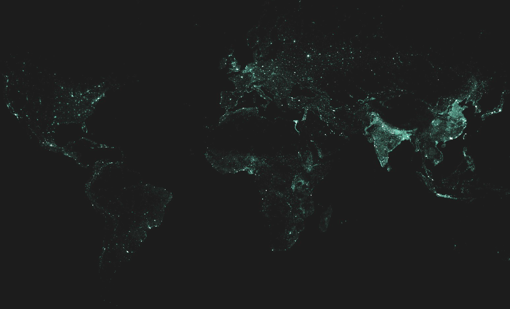
Preamble
The field of human population mapping is constantly evolving, leveraging the increasing availability of high-resolution satellite imagery and the advancements in the field of machine learning. In recent years, the emergence of global built-area datasets that accurately describe the extent, location, and characteristics of human settlements has facilitated the production of new population grids, with improved quality, accuracy, and spatial resolution.
In this demonstration lab, we will utilize the GPW v4 Population Count Dataset hosted by Columbia University. This dataset features a estimated population value (count) per grid cell of approximately 5km spatial resolution (2.5 minute). The following short video introduces the data and its production methodology:
We will explore raster symbolization and utilize the Raster Calculator to produce a difference value between 2010 and 2020 across the GPW dataset. Once we achieve our raster result, we will then classify the raster values into an ordinal scale of population decline/growth between the years 2010 and 2020.
Data
There are two raster datasets in the data directory. They originate from the Gridded Population of the World V4 (GPW) based on two temporal variables - 2010 and 2020 population counts (number of persons per pixel).
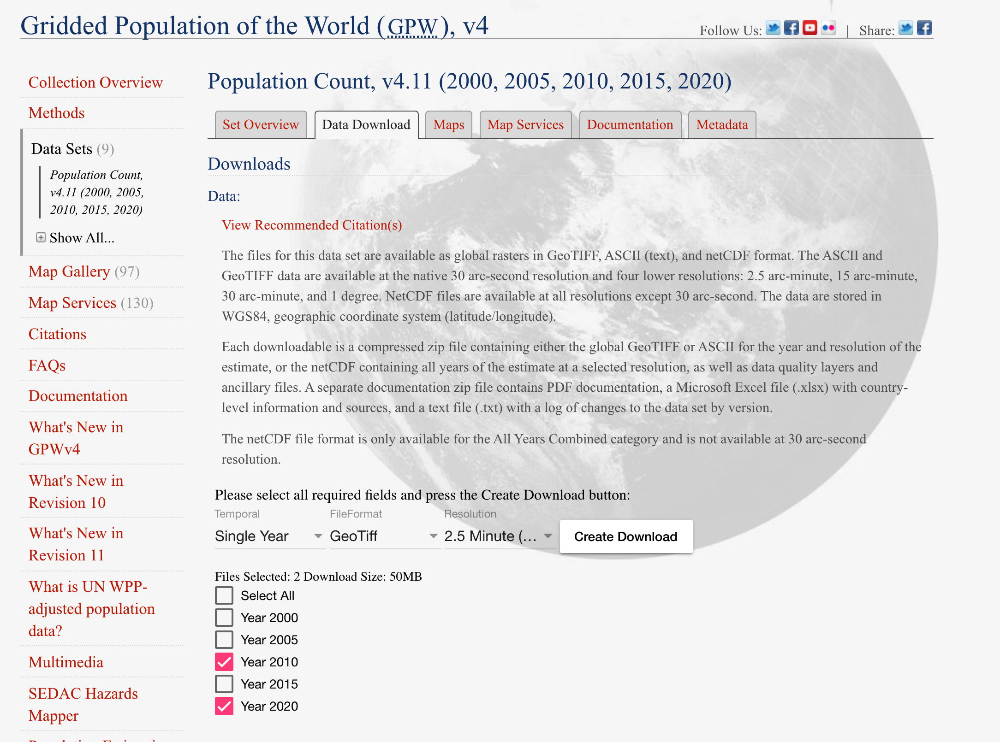
Step 1:
Open QGIS and point Data Source Manager to the c5.lab.data.gpw-v4-pop_count_2010_2020 lab data. Remember to uncompress (unzip) the data directory before proceeding. Unlike previous week’s Vector and Delimited Text file types, we will utilize the Raster option:
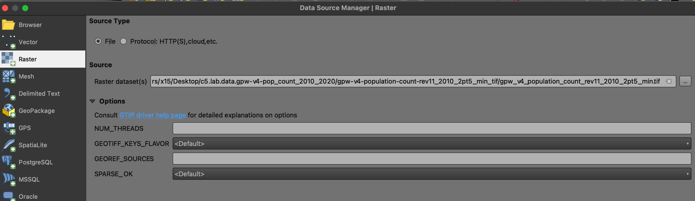
RasterImport both 2010 and 2020 Gridded Population Rasters into TOC:
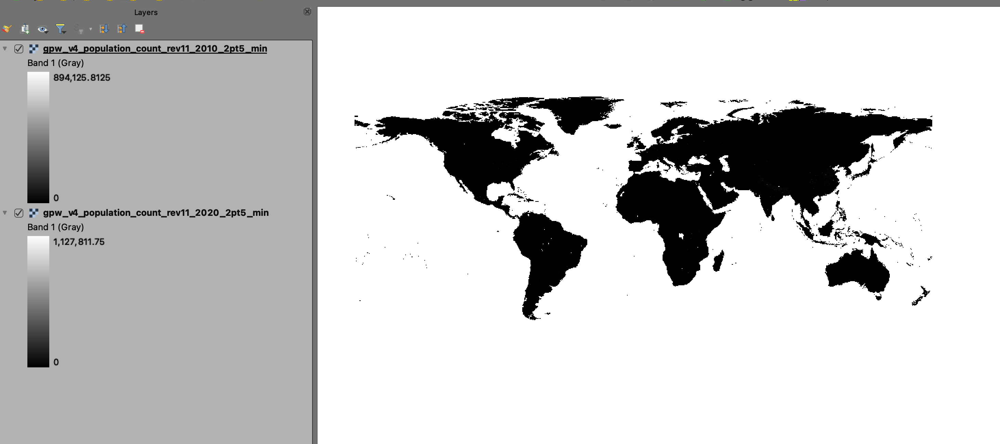
Download the Value Tool plugin from main menu > plugins > value tool:
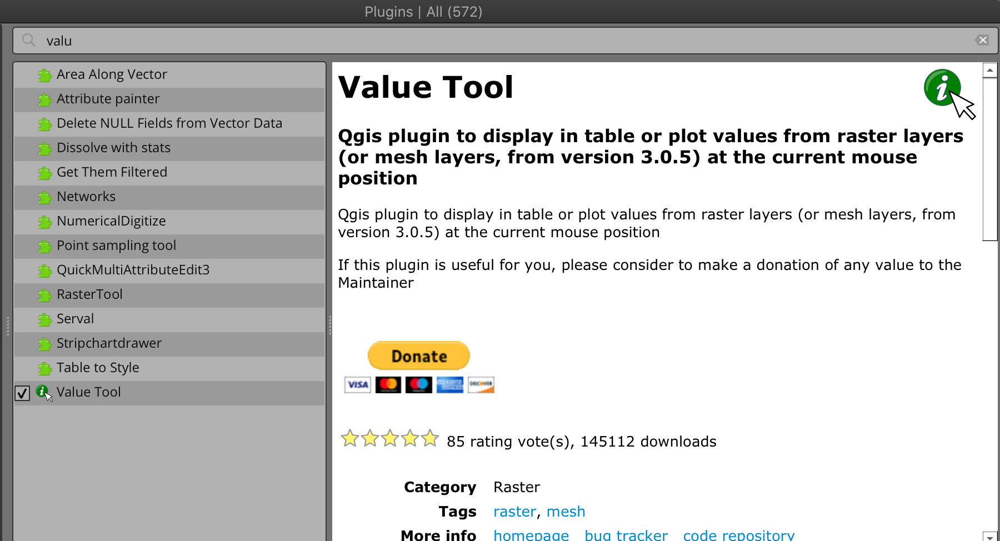
With both rasters loaded, install the tool and enable it in lower right of the map canvas. Find cell areas at/near a large urban area and move the tool over this geography. Notice that the values for 2010 will typically be smaller than 2020 representing urban population gain:
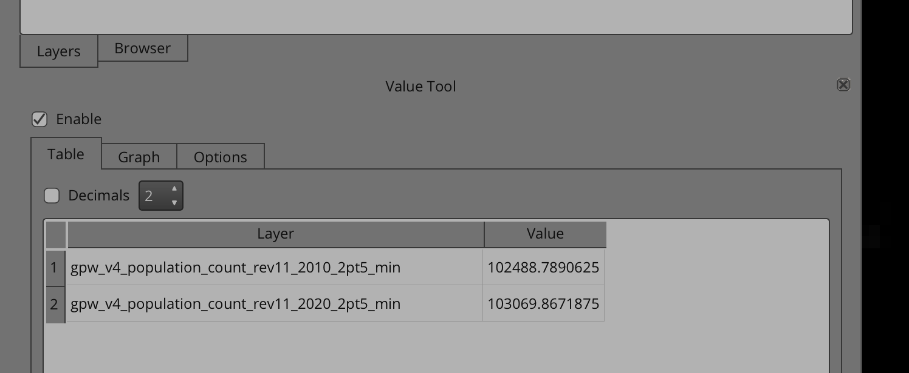
In this demonstration lab, this difference between 2010 and 2020 across both raster extents will be derived and mapped. Prior to calculating difference, symbolization will be explored.
Step 2:
Within the 2010 layer, navigate to layer properties > symbology. Choose Singleband pseudocolor renderer. Expand the Min / Max Value Settings and choose the Cumulative count cut option. The standard data range is set from 2% to 98% of the data values, meaning that the outliers will not be used to set the minimum and maximum values, resulting in a much more representative visualization. Typically this makes sense for visualization; however, when conducting symbolization, keep in mind the actual data distribution (use the histogram to determine data distribution) determines the color ramp.
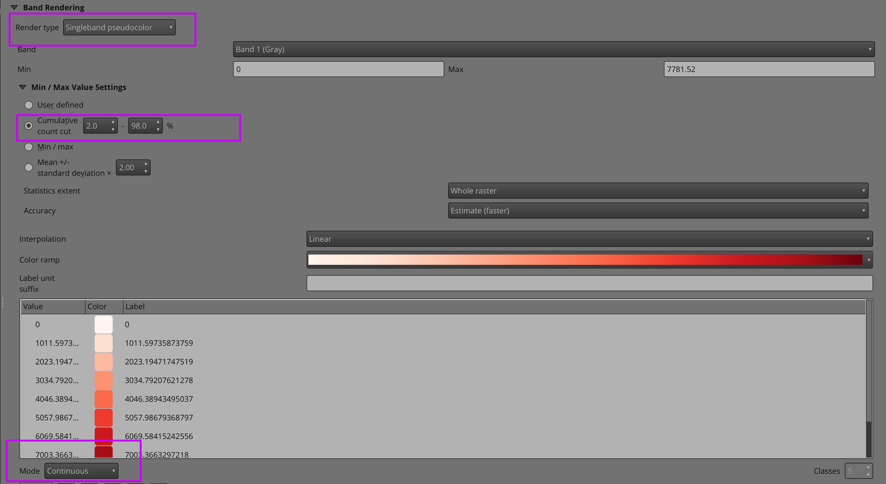
There are three modes of interpolation of values:
- Linear (
INTERPOLATED): resulting color is linearly interpolated from the color map entries above and below the actual pixel value. - Discrete (
DISCRETE): color is used from the color map entry with equal or higher value. - Exact (
EXACT): color is not interpolated, only the pixels with value equal to color map entries are drawn.
Check results:
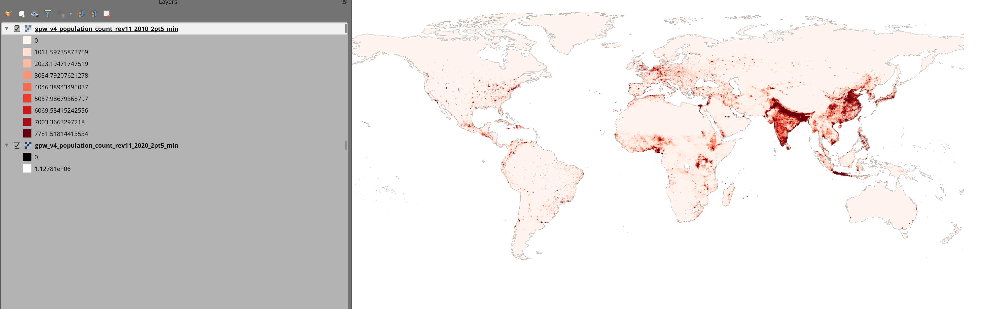
Next, Copy the applied style in the 2010 layer, and apply Paste to the 2020 layer. Toogle the two layers ON/OFF; note the population gains at/near high population urban geographies:
Copy:
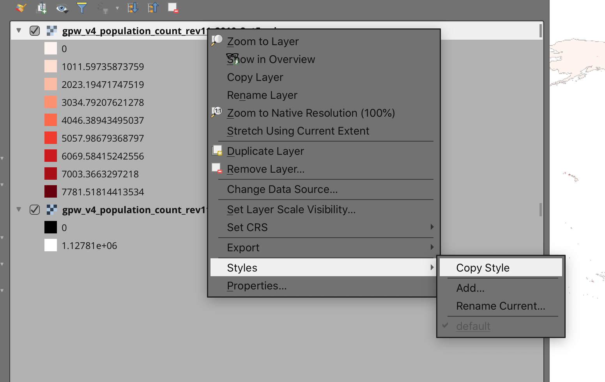
Paste:
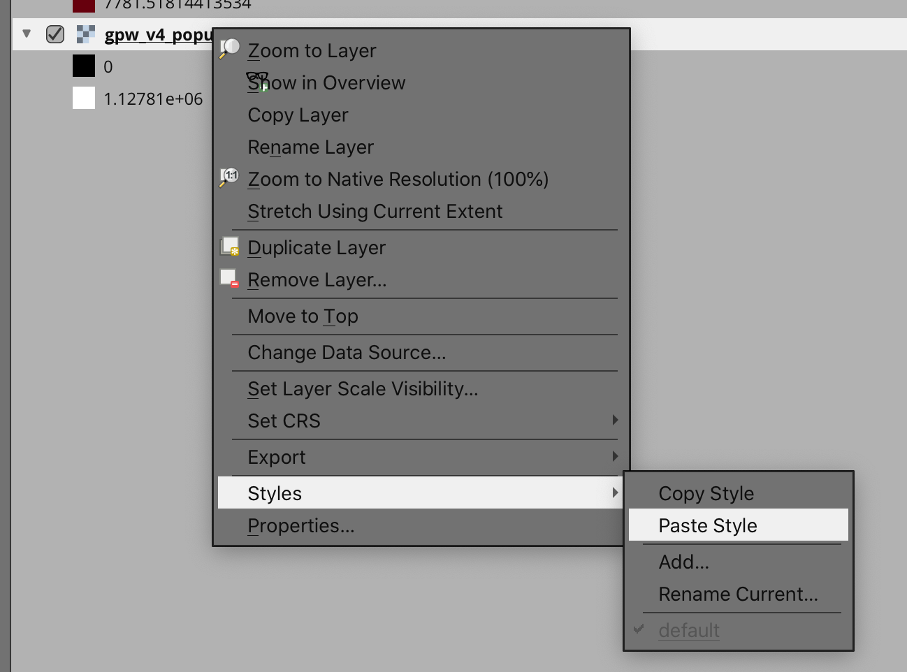
Toogle Results:
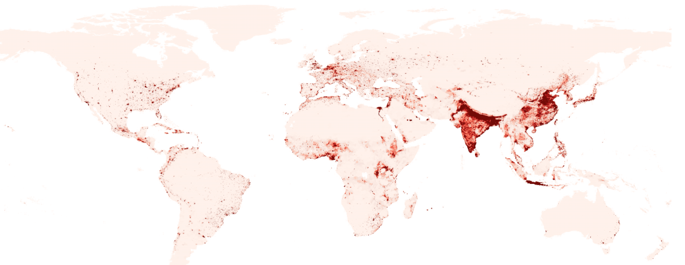
Step 3:
Save project before moving to the calculations. Open the Raster Calculator via Main Menu > Raster > Raster Calculator:
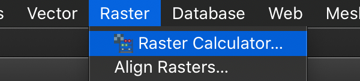
Within the Raster Calculator, bands are named after the raster name followed by @ and band number. Since each of our rasters have only 1 band, you will the names with @1 appended to the layer name. The calculation that will be utilized to derive change is simple raster math - in this case subtraction formatted as follows:
\[ Population Raster2020 - Population Raster2010 \]
"gpw_v4_population_count_rev11_2020_2pt5_min@1" - "gpw_v4_population_count_rev11_2010_2pt5_min@1"
Output the layer as population_change_2010_2020.tif:
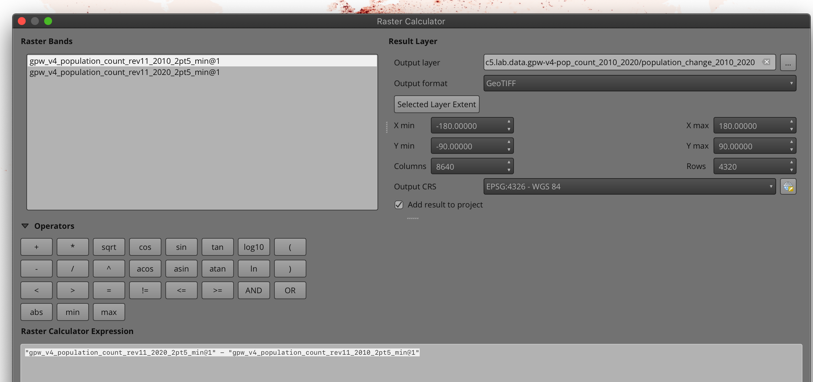
Step 4:
Visualize the results not with continuous values per se, but discrete values. Here we give an ordinal value to the colors beyond their original position within the dataset. Four discrete values with corresponding unique colors will be used to break the broad theme of population change into meaningful categories:
- Decline |
-100 - Neutral |
100 - Growth |
1,000 - High Growth |
1,000,000
- Decline |
Within the population_change_2010_2020.tif layer , navigate to layer properties > symbology. Choose Singleband pseudocolor renderer. Select the Interpolation method as Discrete. Remove any values using the minus button (red minus sign):

Each of the four discrete breaks will be entered manually. Start with Decline, setting the break to -100 and color to dark blue, then selecting Apply. Continue with the other values in the proposed ordinal scale from Decline to High Growth:
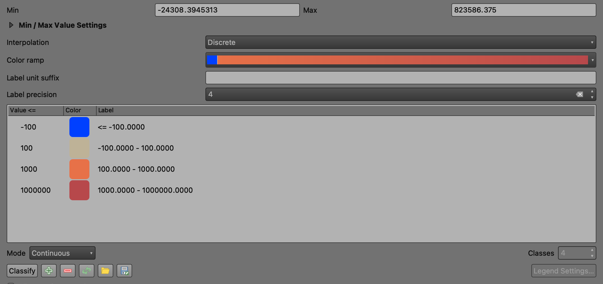
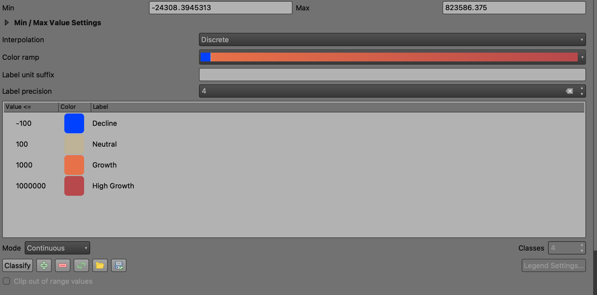
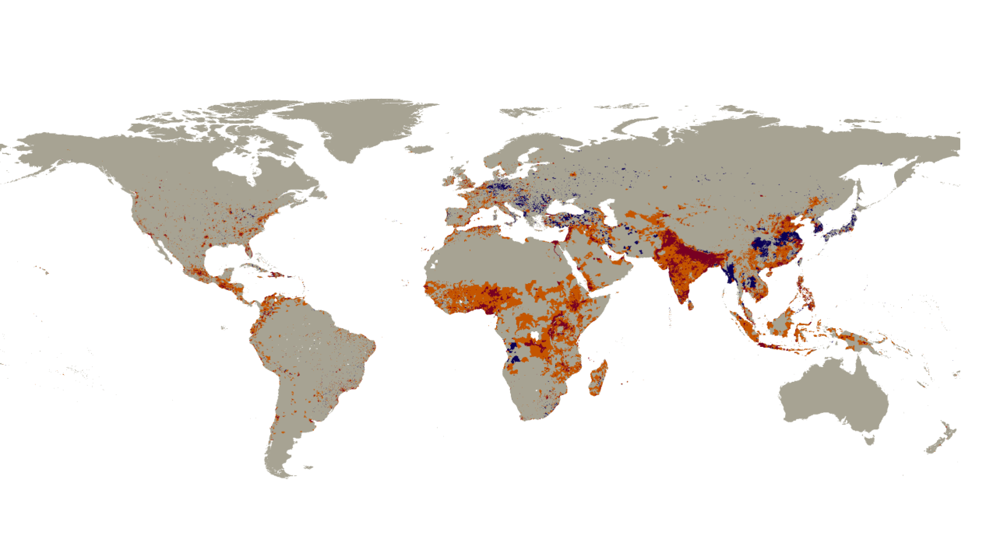
Zoom into larger scale geographies (the northeast US shown below) and notice population spatial patterns. ‘Rustbelt’ cities in the northeast US feature prominently in the Decline class:
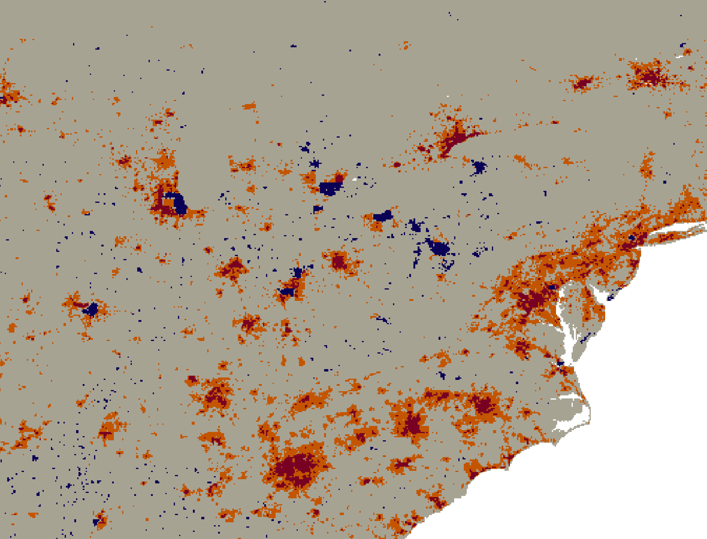
Zoom further to the City of Detroit and City of Flint to see the large scale pattern 2010 - 2020:

To install a basemap for locational comparison and context of the Population Difference Raster, utilize the QuickMapServices plugin and choose the OSM Standard basemap product.
Concluding Remarks
In this fifth demonstration lab, we explored important dimensions of raster data; conducted a simple overlay analysis via the Raster Calculator, and applied an ordinal scale to discrete class breaks to produce a global population result that helps us understand both decline and growth at both small and regional scales.
The Gridded Population of the World (GPW), v4 used in this demonstration lab is one of several global population datasets readily available for GIS analysis. Two products worth exploring further are as follows: